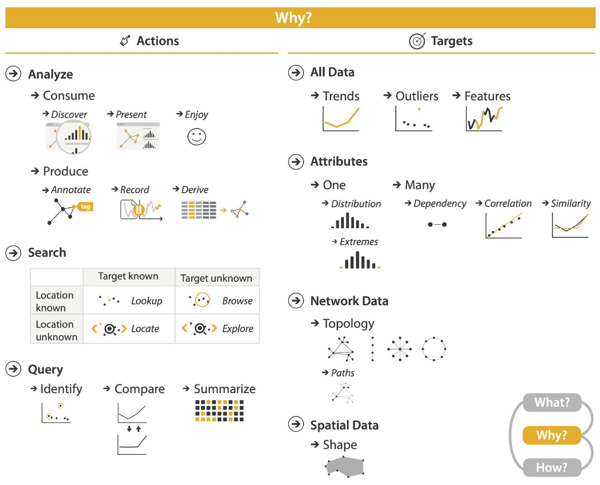

LAST LECTURE
Computer-based visualization systems provide visual representations of datasets designed to help people carry out tasks more effectively.

TASK ABSTRACTION
Computer-based visualization systems provide visual representations of datasets designed to help people carry out tasks more effectively.


FROM DOMAIN TO ABSTRACTION
KEY COMPONENTS OF TASK ABSTRACTION
{action, target} pairs
Computer-based visualization systems provide visual representations of datasets designed to help people carry out tasks more effectively.
ACTIONS - Search
Lookup: Location and target both known
- Example: Look up humans in the Tree of Life, knowing they are mammals.
Locate: Location unknown and target known
- Example: Look up rabbits in the Tree of Life, not knowing they are lagomorphs.
Browse: Location known and target unknown
- Example: Find any clades within Mammalia that have only one species.
Explore: Location unknown and target unknown
- Example: Searching for anomalies in time series data.
SUMMARY
Computer-based visualization systems provide visual representations of datasets designed to help people carry out tasks more effectively.